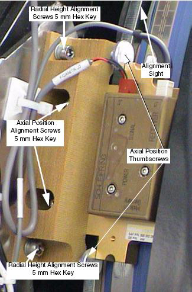

| NOTE: | The following illustration may not show the same power and data connection locations as your system version. Your system type may have these connections on the bottom. The adjustments shown remain the same. |
Illustration 1: HSDCD Receiver
